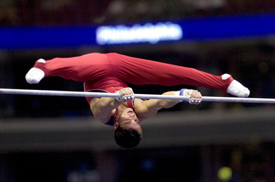

Guillermo Alvarez (USA)
2006 and 2007 World Championships Team Member
2007 US Championships AA Silver Medalist

Guillermo was born on October 24, 1982, in Denver, Colorado. A graduate of the University of Minnesota, and a member of its gymnastics team, he won the Nissen-Emery award in 2005.
Competition Results
1999
Jr. US Championships: 20th AA (age 16-18)
2000
Jr. US Championships: 16th AA (age 16-18)
2001
JO Nationals: 4th AA (jr. elite)
Peter Vidmar Invitational: 3rd AA (Class I)
Winter Cup: 23rd AA
2002
NCAA Championships: 12th AA, 3rd FX
Winter Cup: 8th AA
2003
NCAA Championships: 16th AA
University Games: 7th Team, 24th AA
US Championships: 15th AA
Winter Cup: 4th AA, 1st FX
2004
NCAA Championships: 5th AA, 4th FX
US Championships: 18th AA
2005
Big Ten Championships: 1st Team, 1st V
NCAA Championships: 4th AA, 2nd PH, 2nd V
Pan American Championships: 1st Team, 2nd FX, 6th V
US Championships: 1st FX, 2nd PH
Winter Cup: 2nd AA, 2nd PH, 2nd V
2006
FRA-SUI-USA: 1st Team
Pacific Alliance Championships: 4th Team, 7th R
US Championships: 3rd AA, 3rd PH, 4th FX, 4th V
Winter Cup: 3rd AA, 4th PH
World Championships: 18th AA
2007
American Cup: 5th AA (prelims)
Pan American Games: 3rd Team, 3rd AA, 2nd FX, 8th PB
US Championships: 2nd AA, 2nd V, 3rd FX, 3rd PH
Winter Cup: 3rd AA, 2nd PH, 3rd V
World Championships: 4th Team, 4th FX
2008
CAN-USA Dual Meet: 1st Team, 1st AA, 1st V, 2nd PH, 4th FX
US Championships: 7th AA, 4th PH, 7th FX
US Olympic Trials: 6th AA
Winter Cup: 9th AA
This page was created on June 26,
2010.
© Gymn Forum